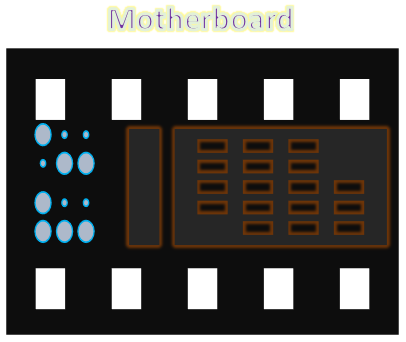
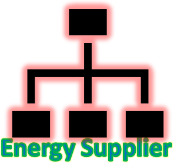
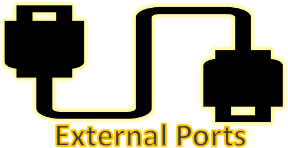
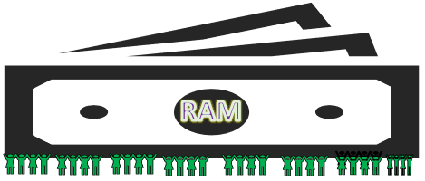
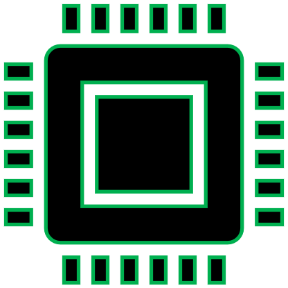
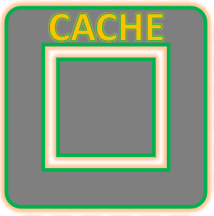

Motherboard
It’s the mother of computer hardware components also known as (the heart of computer) where all of them based on it and this the reason of calling it motherboard. The function of the motherboard is to connect and control all the essential elements of any computer device such as CPU, hard disk, memory and video card by allowing them to receive power then communicate them with each other so they could run correctly.
Hard disk drive (HDD
It’s non-volatile memory hardware and it consist of numbers of platters based on the needs which data is written using a magnetic head. The main purpose of it is to keep your files which contains data and information’s save so when you turn off your PC you will not lose them. However, it’s not the only permanent storage which could store data in there are other type of storages does the same function such as CD ROM or floppy disk.
Power supply unit (SPU)
The device which suppling electric energy to the internal components of computer as it’s connecting with the motherboard. Which is converting AC to low-voltage to run devices and its passing electric energy to electric load. The functions of this device are to keep the power inside and convert it then pass power to the pc components based on how much each part needs to work on. An example 12V would be giving to devices such as fan, heatsink, etc.
Fan ---&--- Heatsink
It’s an electronic device mix either a fan or Peltier to keep a hot component such as processor cool so it won’t get damaged. The key role of it is to look after coolness of the computer and make sure is cool enough to don’t ruin other computers components. While the heatsink is responsible to push out the temperature which might case overheating.
Physical Ports
They are defined as the female part of connection where they are useful because they are allowing other devices to connect with the computer. This connect could be by a plug such as USB or cables where mouse, printer and other devices could connect. Therefore, physical ports are external ports that could be reach without moving computer cabinet.
System bus
The Bus system is a communications path located on the motherboard that links the component which are based on the motherboard together. The motherboard carrying different kind of buses including an address bus, instruction bus and data bus which each one of them has different action to do with such as linking the motherboard with CPU or RAM .
Random access memory (RAM)
RAM is considered as temporary memory where it stored temporally programs runs and losing those data while the computer turns off, however RAM is begging used by CPU when a computer runs programs it’s enabling the CPU to access instructions and data stored in memory very fast. As well as it’s the source speed of the computer. much you get higher RAM much you could open more programs and run them faster. It’s placed on the motherboard and provides the memory space for operating system and application software where you could upgrade the space by adding on more RAM until all socket are filled.
Central processing unit (CPU)
It’s called “central processor” considered as the brain of the computer as it located as chip on the motherboard and has three main tasks to complete which are manipulating data, carrying out instructions and making calculations. The CPU contains electronic circuity which is responsible for running instructions called programs which performs basic input/output of computer system as well as it’s responsible for the mathematics operations. The processor must be working with high speed so provide perfect performance and it’s used to be measured in hertz but with nowadays with modern technology needs it’s measuring with gigahertz which would increase the performance, better graphics and keep up with new software.
Cache memory
A cache is a temporary storage area where frequently accessed data can be stored for rapid access as it placed on the motherboard and integrated directly with the CPU chip and sometimes placed on a separate chip but still interconnect with CPU by using separate bus. As well as it’s increasing the performance and allows faster retrieval of data. Therefor it’s nearly the most vital component between hardware components as well it’s costing massively.
